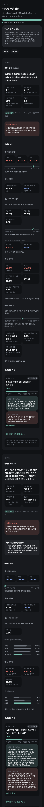
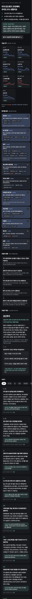

투자 · 디자인 보드 · 정본 · 2026-11-23
구성과 내용은 그대로 두고 글꼴·글자 크기·간격·모서리·색만 preneur-design-kit 값으로 바꿨어요. 다음 과제는 아침 브리프 디벨롭이에요.
휴대폰 390 폭 실제 화면 사진이에요. 사진 칸 안에서 스크롤하면 아래가 보여요(긴 페이지는 앞부분 7000px까지).
승인 카드 «근거 자세히 보기» · 다음 주문부터

매일 07:15 · 11/24부터 새 모습

| 페이지 | 글자 크기 | 모서리 | 좌우 여백 | 섹션 간격 | 글꼴 | 굵기 |
|---|---|---|---|---|---|---|
| 운용 장부(실제 배포) | 24·17·13 | 20·16·999 | 20 | 32 | Pretendard 하나 | 400·600·700 |
| 주문 근거(시험 데이터) | 24·17·13 | 20·16·999 | 20 | 32 | Pretendard 하나 | 400·600·700 |
| 아침 브리프(11/23 데이터) | 24·17·13 | 20·16·999 | 20 | 32 | Pretendard 하나 | 400·600·700 |
키트 기준: 한 화면 글자 3단계 이하, 모서리 20(카드)·16(버튼·안쪽 칸)·999(칩)만, 4px 간격(좌우 20·섹션 32·묶음 16~24·묶음 안 8~12), 굵기 400/600/700. 세 페이지 모두 일치. 검수 범위: 자동 측정 + 휴대폰 폭 캡처. 실기기(아이폰)·PC 넓은 화면 최적화는 아직 안 봤어요.
| 글자 | 쓰는 곳 |
|---|---|
| 24/34 · 700 | 페이지 제목, 큰 숫자 |
| 17/27 · 400·600·700 | 본문, 섹션 제목(700) |
| 13/19 · 400·600 | 설명, 메타, 칩 |
브랜드 1색 · 1등·강조·링크 오름·위험 내림
나머지는 회색 9단계. 다혜가 직접 보는 도구라 어두운 바탕 고정. 그래프는 에이전트별 색 대신 회색 선 + 1등만 브랜드 색 + 선 끝 이름표. 정본 코드: invest-brief 저장소 kit_css.py.
글 대신 그림, 본문 17. 다혜 요청(11/23)으로 페이지 전체를 브라우저에서 전수 점검하고 고쳤어요.
| 점검 항목 | 처음 | 고친 뒤 |
|---|---|---|
| 글자 크기·줄간격 짝 | 24/34·17/27·13/19만 | 그대로 통과 |
| 위계: 섹션 제목 vs 카드 제목 | 둘 다 17·700 — 구분 안 됨 | 섹션 24·700 / 카드 17·700 / 본문 17·400 / 이름표 13 |
| 4px 간격 밖 여백 | 54곳(칩 2px, 묶음 14px, 위 여백 10px) | 0곳 |
| 섹션 사이 간격 | 32 (14곳) | 32 (14곳) |
| 모서리 | 20·16·999 | 20·16·999 |
| 상자 3겹 겹침 | 3곳 | 0곳(안쪽은 구분선) |
| 글자 대비 4.5 미만 | 12곳(날짜·출처·표 머리 3.3~3.9) | 0곳 |
| 눈금자 이름표 겹침 | 1곳(버크셔 지금·목표가) | 0곳 |
같은 공통 기준값을 쓰는 운용 장부·주문 근거도 같은 점검으로 0곳(주문 근거의 여백 10·14·6·2px와 3겹 가설 칸도 고침). 검수 범위: 휴대폰 390 자동 측정 + 화면 사진. 실기기 아이폰은 아직.
다혜 피드백 2차(11/23) 반영: ① 순서 = 제목·1·2·3·초보 체크 → 같은 모양 «내 포트폴리오 근황» 배너 → 오늘 숫자 → 분야별 날씨 → 오늘의 흐름 → 이야기 → 기억나세요? → 떠오르는 종목 → 오늘의 개념 → 오늘의 원칙 → 나머지 기존 순서 ② 봇 물어보기 버튼 삭제 ③ 보유 종목은 어제 대비·산 뒤로 + 오늘 뉴스·남들 시각 중심, 지금 상태·앞으로는 짧게 ④ 떠오르는 종목은 헤드라인이 아니라 «얼마나·왜 중요한가·지금 값·남들 시각·조심할 점·앞으로». 모든 숫자는 11/23 실제 기사·네이버 컨센서스·Yahoo.
검수: 휴대폰 390에서 글자 24·17·13, 모서리 20·16·999, 가로 넘침 0(옆으로 미는 이야기 탭 제외), 순서·버튼 삭제 확인. 미확인: 휴림로봇 계약 금액(DART 원문 필요).
다혜 피드백(11/23): 기존 브리프는 좋다, 더 심화 + 내 에이전트 종목 근황·분석, 더 길어도 된다. → 지금 브리프 전체를 그대로 두고 «새로»(내 에이전트 종목 근황·분석, 떠오르는 종목)와 «더 깊게»(흐름 아래 원리·증권사 원문·이번 주 일정, 분야별 날씨에 튄 종목)를 붙였어요. 11/23 실제 데이터, 가설 진행 막대만 예시.
검수: 휴대폰 390에서 글자 24·17·13, 모서리 20·16·999. 옆으로 미는 이야기 탭 외 가로 넘침 0. 떠오르는 종목 자동 찾기 엔진은 아직 안 만듦(두 종목은 손으로 확인한 예시).
원하는 것 = 에이전트 보유 종목 현황과 이유 + 한 단계 깊은 매크로 + 공시·뉴스로 거꾸로 찾은 떠오르는 종목. 세 시안 모두 11/23 실제 데이터(에이피알 +9.1%, 휴림로봇 상한가는 실제 공시·뉴스로 이유 확인)로 그렸어요. 위는 아침 7:15 텔레그램 메시지, 아래는 «자세히 보기» 페이지예요.
검수: 세 시안 모두 휴대폰 390에서 글자 24·17·13, 모서리 20·16·999, 섹션 간격 32, 가로 넘침 0. 지금 브리프는 휴대폰 12장 길이예요. 떠오르는 종목 찾기(공시·거래량·뉴스·채널 언급 합치기)는 아직 만들기 전이에요. 시안의 두 종목은 손으로 확인한 예시예요.